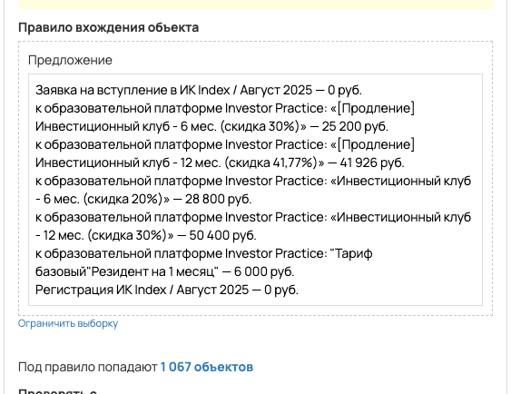
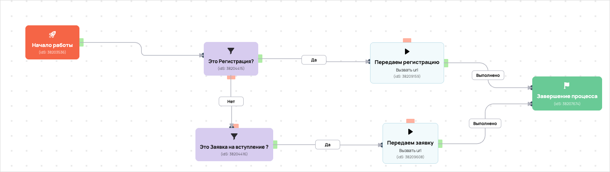

[AMO] [ED] Запуск Инвест Клуба
- ID процесса:
2203357 - Объект: Заказы
- Статус: Ожидание событий
Описание из GetCourse
30.06.2026. Подробный ход процесса GetCourse:
Главное: В процесс попадают заказы по всем предложениям с тегом «запуск_ИК_август2025».
Процесс работает с объектом GetCourse: Заказы. Текущий статус процесса: Ожидание событий.
Как идет процесс внутри GetCourse:
- Схема состоит из 13 блоков и 19 переходов.
Конец подробного хода процесса GetCourse.
30.06.2026. Актуальное описание процесса:
Главное: В процесс попадают заказы по всем предложениям с тегом «запуск_ИК_август2025».
Процесс работает с объектом GetCourse: Заказы. Текущий статус процесса: Ожидание событий.
Конец актуального описания процесса.
Понятное описание процесса
- Процесс работает с объектом GetCourse: Заказы. Текущий статус процесса: Ожидание событий.
- На вход попадают данные так: В процесс попадают заказы по всем предложениям с тегом «запуск_ИК_август2025».
- Техническое правило входа в GetCourse: Предложение (ID: 7513571, 7516029, 7528931, 7513485, 7528915, 7516172, 7504027; теги: запуск_ИК_август2025).
- Внутри схемы есть дополнительные проверки/ожидания: 2. Основные блоки: «Это Регистрация?»; «Это Заявка на вступление ?».
- Дальше процесс делает прямые вызовы Vakas: 2. Напрямую задействованы базы: 84203.
- Передача: 84203. Запуск Инвест Клуба: Оплаты и заказы. Передаются параметры:
number,id,order_id,positions,costMoney,leftCostMoney,payedMoney,status,paymentLink,firstNameи другие. - Передача: 84203. Запуск Инвест Клуба: Оплаты и заказы. Передаются параметры:
number,id,order_id,positions,costMoney,leftCostMoney,payedMoney,status,paymentLink,firstNameи другие. - Что происходит в amoCRM: На входе в этап ИНВЕСТ КЛУБ -> регистрации [79490434] база ищет дубль и может взять старую сделку только из заранее разрешенных этапов.
Ход процесса в GetCourse
- Схема состоит из 13 блоков и 19 переходов.
- По типам: стартов 1, условий/ожиданий 2, вызовов URL 6, изменений полей 2, финалов 1.
Блоки процесса: что делают и зачем нужны:
- Блок
38203536«Начало работы» (старт). Что делает: Запускает выполнение схемы для объекта, который попал под правило входа процесса. Зачем нужен: Нужен как точка входа: от него GetCourse начинает движение объекта по схеме. Дальше: если результат «Выполнено», идет в «Это Регистрация?». - Блок
38204415«Это Регистрация?» (условие). Что делает: Проверяет условие: Предложение (ID: 7504027; теги: запуск_ИК_август2025). Зачем нужен: Нужен, чтобы разделить поток: подходящих пользователей/заказы отправить дальше, неподходящих перевести на другую ветку или завершить. Дальше: если результат «Нет», идет в «Это Заявка на вступление ?»; если результат «Да», идет в «Передаем регистрацию». - Блок
38209159«Передаем регистрацию» (вызов URL). Что делает: Передает в Vakas: 84203. Запуск Инвест Клуба, канал «Оплаты и заказы» (GET); параметры:number,id,order_id,positions,costMoney,leftCostMoney,payedMoney,status,paymentLink,firstName,lastName,name,email,phoneи другие; timeout 300 сек. Зачем нужен: Нужен, чтобы передать подходящий объект в 84203. Запуск Инвест Клуба; дальше На входе в этап ИНВЕСТ КЛУБ -> регистрации [79490434] база ищет дубль и может взять старую сделку только из заранее разрешенных этапов. Дальше: если результат «Ошибка», идет в «n8n fail после Передаем регистрацию #38209159»; если результат «Выполнено», идет в «n8n success после Передаем регистрацию #38209159». - Блок
43525621«n8n success после Передаем регистрацию #38209159» (вызов URL). Что делает: Вызывает внешний URL: testn8n.easydrafting.ru/webhook/gc-vakas-retry-events (POST); параметры:event,clientED,gcDomain,action,process_id,process_name,entity_type,object_id,order_id,user_id,name,email,phone,error_message; timeout 10 сек. Зачем нужен: Нужен, чтобы процесс GetCourse передал данные во внешний сервис testn8n.easydrafting.ru. Дальше: если результат «Ошибка», идет в «error_vakas 0 (копия)»; если результат «Выполнено», идет в «error_vakas 0 (копия)». - Блок
43436263«error_vakas 0 (копия)» (изменение поля). Что делает: меняет полеerror_vakas(Установить равным). значение: 0 Зачем нужен: Нужен, чтобы записать внутри GetCourse технический признак/значение, которое потом используется в передаче или логике ветвления. Дальше: если результат «Выполнено», идет в «Завершение процесса». - Блок
38207674«Завершение процесса» (завершение). Что делает: Завершает ветку процесса после выполненных проверок и действий. Зачем нужен: Нужен, чтобы закрыть текущую ветку и не гонять объект по процессу повторно. Дальше переходов нет: это конечная точка ветки. - Блок
43525622«n8n fail после Передаем регистрацию #38209159» (вызов URL). Что делает: Вызывает внешний URL: testn8n.easydrafting.ru/webhook/gc-vakas-retry-events (POST); параметры:event,clientED,gcDomain,action,process_id,process_name,entity_type,object_id,order_id,user_id,name,email,phone,error_message; timeout 10 сек. Зачем нужен: Нужен, чтобы процесс GetCourse передал данные во внешний сервис testn8n.easydrafting.ru. Дальше: если результат «Ошибка», идет в «Это Регистрация?»; если результат «Выполнено», идет в «Это Регистрация?». - Блок
38204416«Это Заявка на вступление ?» (условие). Что делает: Проверяет условие: Предложение (ID: 7513571). Зачем нужен: Нужен, чтобы разделить поток: подходящих пользователей/заказы отправить дальше, неподходящих перевести на другую ветку или завершить. Дальше: если результат «Да», идет в «Передаем заявку». - Блок
38209608«Передаем заявку» (вызов URL). Что делает: Передает в Vakas: 84203. Запуск Инвест Клуба, канал «Оплаты и заказы» (GET); параметры:number,id,order_id,positions,costMoney,leftCostMoney,payedMoney,status,paymentLink,firstName,lastName,name,email,phoneи другие; timeout 300 сек. Зачем нужен: Нужен, чтобы передать подходящий объект в 84203. Запуск Инвест Клуба; дальше На входе в этап ИНВЕСТ КЛУБ -> регистрации [79490434] база ищет дубль и может взять старую сделку только из заранее разрешенных этапов. Дальше: если результат «Ошибка», идет в «n8n fail после Передаем заявку #38209608»; если результат «Выполнено», идет в «n8n success после Передаем заявку #38209608». - Блок
43525623«n8n success после Передаем заявку #38209608» (вызов URL). Что делает: Вызывает внешний URL: testn8n.easydrafting.ru/webhook/gc-vakas-retry-events (POST); параметры:event,clientED,gcDomain,action,process_id,process_name,entity_type,object_id,order_id,user_id,name,email,phone,error_message; timeout 10 сек. Зачем нужен: Нужен, чтобы процесс GetCourse передал данные во внешний сервис testn8n.easydrafting.ru. Дальше: если результат «Ошибка», идет в «error_vakas 0 (копия)»; если результат «Выполнено», идет в «error_vakas 0 (копия)». - Блок
43525624«n8n fail после Передаем заявку #38209608» (вызов URL). Что делает: Вызывает внешний URL: testn8n.easydrafting.ru/webhook/gc-vakas-retry-events (POST); параметры:event,clientED,gcDomain,action,process_id,process_name,entity_type,object_id,order_id,user_id,name,email,phone,error_message; timeout 10 сек. Зачем нужен: Нужен, чтобы процесс GetCourse передал данные во внешний сервис testn8n.easydrafting.ru. Дальше: если результат «Ошибка», идет в «Это Заявка на вступление ?»; если результат «Выполнено», идет в «Это Заявка на вступление ?». - Блок
43436261«error_vakas 1 (копия)» (изменение поля). Что делает: меняет полеerror_vakas(Установить равным). значение: 1 Зачем нужен: Нужен, чтобы записать внутри GetCourse технический признак/значение, которое потом используется в передаче или логике ветвления. Дальше: если результат «Выполнено», идет в «Задержка (копия)». - Блок
43436262«Задержка (копия)» (таймер). Что делает: Делает паузу или ждет заданное время перед следующим шагом. Зачем нужен: Нужен для задержки между проверкой и передачей, чтобы данные успели появиться или чтобы соблюсти нужный порядок обработки. Дальше: если результат «Выполнено», идет в «Начало работы».
Скриншоты процесса


Откуда: процесс берет заказы по предложениям с тегами: запуск_ИК_август2025. Полное правило показано на скриншоте ниже.
Что проверяет по пути: Это Регистрация?, Это Заявка на вступление ?.
Куда ведет: вызывает внешние URL: Передаем регистрацию, Передаем заявку.
Логика Vakas и amoCRM
- Условие входа в процесс: Предложение (ID: 7513571, 7516029, 7528931, 7513485, 7528915, 7516172, 7504027; теги: запуск_ИК_август2025).
- Вызовов Vakas в схеме:
2. Уникальных URL Vakas:2. Связанных баз:1.
Связанная база Vakas: 84203. Запуск Инвест Клуба
- Использование в процессе: Оплаты и заказы
- Документация базы: 84203. Запуск Инвест Клуба
- Страница настройки: Vakas
- Поиск дублей: Проверять на дубли
- Искать только в выбранных воронках: 14
- Ответственный по контакту имеет приоритет: Да
Вызовы из процесса
Передаем регистрацию
- Endpoint:
payments - URL вызова:
https://vakas-tools.ru/base/payments/8927217/84203/?number={object.number}&id={object.user.id}&order_id={object.id}&positions={object.positions}&costMoney={object.cost_money}&leftCostMoney={object.left_cost_money}&payedMoney={object.payed_money}&status={object.status}&paymentLink={object.payment_link}&firstName={object.user.first_name}&lastName={object.user.last_name}&name={object.user.name}&email={object.user.email}&phone={object.user.phone}&manager_name={object.manager}&manager_email={object.manager_email}&manager_phone={object.manager_phone}&offers={object.offers}&avatarUrl={object.user.avatar_url}&utmS={object.user.create_session.utm_source}&utmM={object.user.create_session.utm_medium}&utmCa={object.user.create_session.utm_campaign}&utmCo={object.user.create_session.utm_content}&utmT={object.user.create_session.utm_term}&p1=7504027 - Связанная база Vakas: 84203. Запуск Инвест Клуба
Когда срабатывает в процессе
- Сценарий 1:
Начало работы--Выполнено-->Это Регистрация?--Да-->Передаем регистрацию- условие
Это Регистрация?: Предложение (ID: 7504027; теги: запуск_ИК_август2025) ->Да
- условие
- Сценарий 2:
error_vakas 1 (копия)--Выполнено-->Задержка (копия)--Выполнено-->Начало работы--Выполнено-->Это Регистрация?--Да-->Передаем регистрацию- таймер
Задержка (копия)->Выполнено - условие
Это Регистрация?: Предложение (ID: 7504027; теги: запуск_ИК_август2025) ->Да
- таймер
Что уходит в Vakas
<details> <summary>Показать 25 параметров запроса</summary>
numberidorder_idpositionscostMoneyleftCostMoneypayedMoneystatuspaymentLinkfirstNamelastNamenameemailphonemanager_namemanager_emailmanager_phoneoffersavatarUrlutmSutmMutmCautmCoutmTp1
</details>
Как база обработает вызов и что будет в amoCRM
-
Логика создания сделки: сначала ищется существующая сделка/контакт по правилам базы; если подходящая сделка найдена, обновляется она, иначе создается новая.
-
Режим проверки дублей: Проверять на дубли
-
Искать дубль только в выбранных воронках: 14 шт.
-
Учитывать закрытые этапы при поиске дубля: нет
-
Добавлять телефон/email в найденный контакт: Нет
-
Менять имя контакта при обновлении: Нет <details> <summary>Показать 14 воронок для поиска дублей</summary>
-
ОСНОВНОЙ ОТДЕЛ - ЗАЯВКИ [6777466] -
ПАССИВНЫЙ ДОХОД [9426954] -
КРИПТОКАПИТАЛ [9498394] -
ФИНАНСОВАЯ СВОБОДА [9498398] -
ОД [9839030] -
КРИПТОКЛУБ [9578374] -
ИНВЕСТ КЛУБ [9500418] -
ОТДЕЛ КЛУБОВ [6869966] -
АПСЕЙЛЫ ОП [8910882] -
ОТДЕЛ ДИАГНОСТИК [6844390] -
ЛИДОРУБЫ [9212986] -
ДИАГНОСТЫ [9213518] -
ЛИДОРУБЫ(Оплаченные) [9692046] -
ЛИДОРУБЫ(Обновленная) [9692054]
</details>
- Автоотправка оплат в amoCRM: Да
- Базовый этап для этого вызова: определяется по типу оплаты
- Новый заказ: ИНВЕСТ КЛУБ -> регистрации [79490434]
- Частичная оплата: ИНВЕСТ КЛУБ -> регистрации [79490434]
- Полная оплата: ИНВЕСТ КЛУБ -> регистрации [79490434]
- Поле amoCRM для суммы: оплачено[payedMoney]
- Двигать старые сделки только с выбранных этапов: Да
- Этапы, из которых разрешен сдвиг: 137 этапов
- Не менять этап при обновлении: Нет
- Менять название сделки при обновлении: Да
- Теги сделки: запуск_ик_26_08
- Ответственный по умолчанию: EasyDrafting[12985298]
- Индивидуальные правила маршрутизации: 2 шт.
- если поле
param1 с бизонсодержит7513571, то сделка идет в этапИНВЕСТ КЛУБ -> НОВЫЙ ЗАКАЗ[75971310] - если поле
param1 с бизонсодержит7504027, то сделка идет в этапИНВЕСТ КЛУБ -> регистрации[79490434]
Передаем заявку
- Endpoint:
payments - URL вызова:
https://vakas-tools.ru/base/payments/8927217/84203/?number={object.number}&id={object.user.id}&order_id={object.id}&positions={object.positions}&costMoney={object.cost_money}&leftCostMoney={object.left_cost_money}&payedMoney={object.payed_money}&status={object.status}&paymentLink={object.payment_link}&firstName={object.user.first_name}&lastName={object.user.last_name}&name={object.user.name}&email={object.user.email}&phone={object.user.phone}&manager_name={object.manager}&manager_email={object.manager_email}&manager_phone={object.manager_phone}&offers={object.offers}&avatarUrl={object.user.avatar_url}&utmS={object.user.create_session.utm_source}&utmM={object.user.create_session.utm_medium}&utmCa={object.user.create_session.utm_campaign}&utmCo={object.user.create_session.utm_content}&utmT={object.user.create_session.utm_term}&p1=7513571 - Связанная база Vakas: 84203. Запуск Инвест Клуба
Когда срабатывает в процессе
- Сценарий 1:
Начало работы--Выполнено-->Это Регистрация?--Нет-->Это Заявка на вступление ?--Да-->Передаем заявку- условие
Это Регистрация?: Предложение (ID: 7504027; теги: запуск_ИК_август2025) ->Нет - условие
Это Заявка на вступление ?: Предложение (ID: 7513571) ->Да
- условие
- Сценарий 2:
error_vakas 1 (копия)--Выполнено-->Задержка (копия)--Выполнено-->Начало работы--Выполнено-->Это Регистрация?--Нет-->Это Заявка на вступление ?--Да-->Передаем заявку- таймер
Задержка (копия)->Выполнено - условие
Это Регистрация?: Предложение (ID: 7504027; теги: запуск_ИК_август2025) ->Нет - условие
Это Заявка на вступление ?: Предложение (ID: 7513571) ->Да
- таймер
Что уходит в Vakas
<details> <summary>Показать 25 параметров запроса</summary>
numberidorder_idpositionscostMoneyleftCostMoneypayedMoneystatuspaymentLinkfirstNamelastNamenameemailphonemanager_namemanager_emailmanager_phoneoffersavatarUrlutmSutmMutmCautmCoutmTp1
</details>
Как база обработает вызов и что будет в amoCRM
-
Логика создания сделки: сначала ищется существующая сделка/контакт по правилам базы; если подходящая сделка найдена, обновляется она, иначе создается новая.
-
Режим проверки дублей: Проверять на дубли
-
Искать дубль только в выбранных воронках: 14 шт.
-
Учитывать закрытые этапы при поиске дубля: нет
-
Добавлять телефон/email в найденный контакт: Нет
-
Менять имя контакта при обновлении: Нет <details> <summary>Показать 14 воронок для поиска дублей</summary>
-
ОСНОВНОЙ ОТДЕЛ - ЗАЯВКИ [6777466] -
ПАССИВНЫЙ ДОХОД [9426954] -
КРИПТОКАПИТАЛ [9498394] -
ФИНАНСОВАЯ СВОБОДА [9498398] -
ОД [9839030] -
КРИПТОКЛУБ [9578374] -
ИНВЕСТ КЛУБ [9500418] -
ОТДЕЛ КЛУБОВ [6869966] -
АПСЕЙЛЫ ОП [8910882] -
ОТДЕЛ ДИАГНОСТИК [6844390] -
ЛИДОРУБЫ [9212986] -
ДИАГНОСТЫ [9213518] -
ЛИДОРУБЫ(Оплаченные) [9692046] -
ЛИДОРУБЫ(Обновленная) [9692054]
</details>
- Автоотправка оплат в amoCRM: Да
- Базовый этап для этого вызова: определяется по типу оплаты
- Новый заказ: ИНВЕСТ КЛУБ -> регистрации [79490434]
- Частичная оплата: ИНВЕСТ КЛУБ -> регистрации [79490434]
- Полная оплата: ИНВЕСТ КЛУБ -> регистрации [79490434]
- Поле amoCRM для суммы: оплачено[payedMoney]
- Двигать старые сделки только с выбранных этапов: Да
- Этапы, из которых разрешен сдвиг: 137 этапов
- Не менять этап при обновлении: Нет
- Менять название сделки при обновлении: Да
- Теги сделки: запуск_ик_26_08
- Ответственный по умолчанию: EasyDrafting[12985298]
- Индивидуальные правила маршрутизации: 2 шт.
- если поле
param1 с бизонсодержит7513571, то сделка идет в этапИНВЕСТ КЛУБ -> НОВЫЙ ЗАКАЗ[75971310] - если поле
param1 с бизонсодержит7504027, то сделка идет в этапИНВЕСТ КЛУБ -> регистрации[79490434]